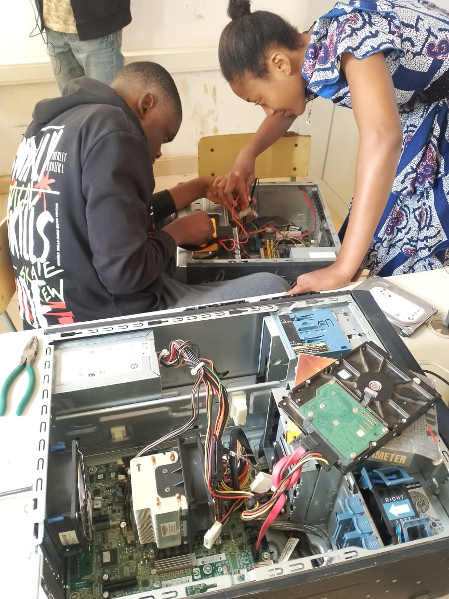
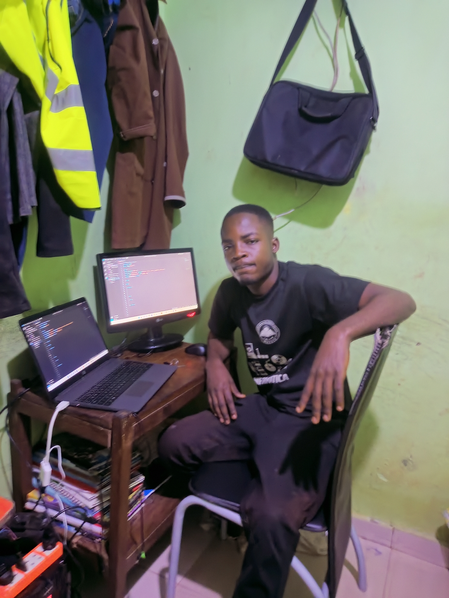
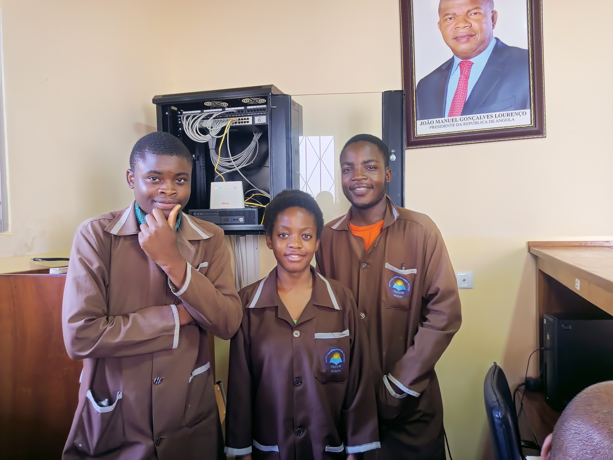
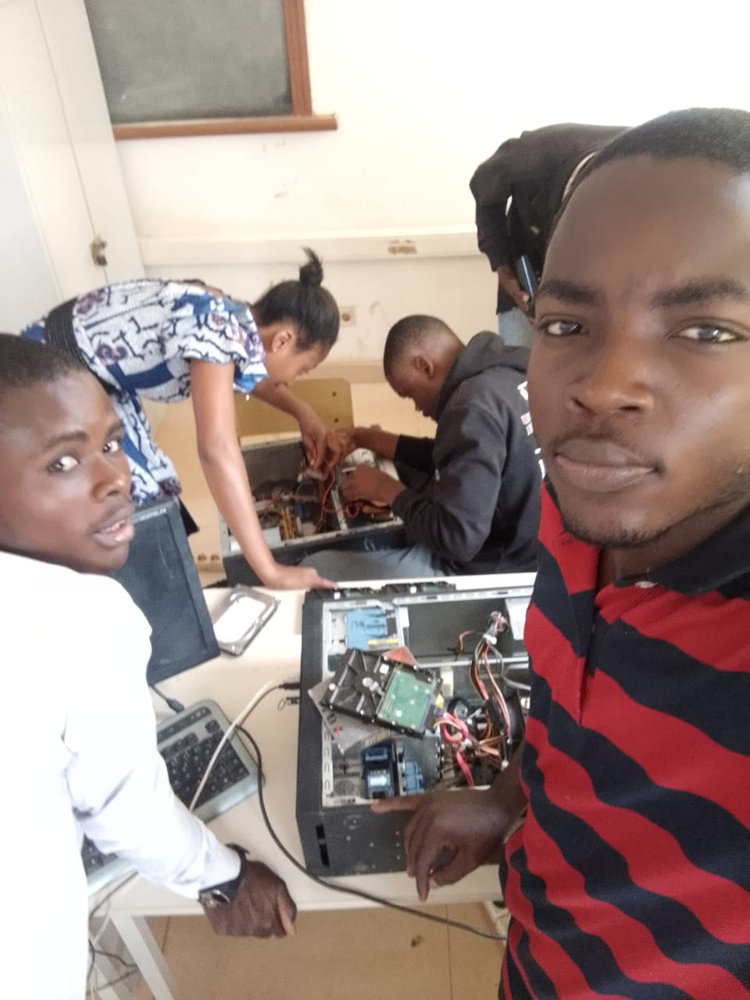
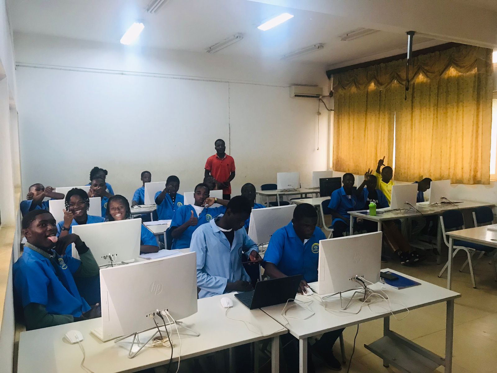

Albano João Alberto
Desenvolvedor | Formador | Técnico de Informática
Bem-vindo à minha página profissional. Conheça minhas experiências, formações e projetos de destaque.
📄 Baixar CVExperiências
- 👨🏫 Professor assistente de TLP – IPAG
- 💻 Desenvolvedor do sistema SIGE Eventos
- 🛠 Estágio técnico na área de TI
Cursos e Formações
- 💡 Curso Técnico de Informática
- 🧠 Lógica de Programação (VisualG)
- 🌐 Word Avançado, Cisco Packet Tracer, Redes
- 💻 C# – Desenvolvimento de Software
- 🌐 PHP e MySQL – Programação Web e Banco de Dados
- 🗄 Banco de Dados
- 🌐 Redes de Computadores
- 🛠 Hardware e Software
- 🗣 Oratória
Galeria de Imagens




